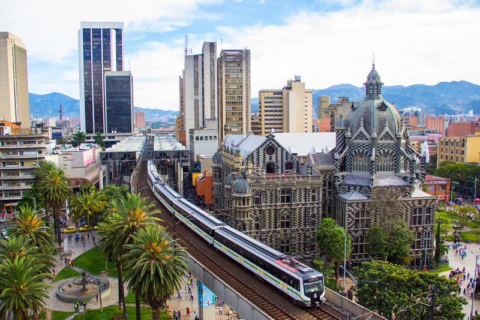

Universidad Libre
Facultad de Ingeneria
2026 Valery Diaz. Todos los derechos son reservados

"Transformación, innovación y el orgullo del Valle de Aburrá." Reconocida mundialmente como un modelo de resiliencia urbana, Medellín ha dejado de ser solo la "Ciudad de la Eterna Primavera" para convertirse en el Distrito Especial de Ciencia, Tecnología e Innovación de Colombia. Rodeada por las montañas de Antioquia, la ciudad destaca por su cultura ciudadana y su sistema de transporte integrado, orgullo de sus habitantes. En 2026, Medellín lidera la exportación de servicios tecnológicos y creativos, manteniendo un equilibrio único entre su empuje industrial, su identidad paisa y una apuesta decidida por la sostenibilidad ambiental en sus comunas.
La ciudad de la "Eterna Primavera" se pone a la vanguardia tecnológica con la entrada en operación de su nuevo vehículo de mantenimiento preventivo. Este equipo, único en Sudamérica, utiliza sensores láser para escanear milimétricamente el desgaste de los rieles y la catenaria mientras el sistema está en marcha. Esto permitirá predecir fallas antes de que ocurran, evitando interrupciones en el servicio que afecta a cerca de un millón de usuarios diarios. El gerente del Metro afirmó que esta tecnología ahorrará al distrito cerca de 5 millones de dólares anuales en reparaciones de emergencia.

La Secretaría de Seguridad de Medellín presentó un balance positivo sobre la estrategia de vigilancia aérea y cámaras LPR (lectura de placas). Gracias a la integración de inteligencia artificial en el centro de monitoreo, se ha logrado la recuperación de más de 200 motocicletas hurtadas en lo que va del año. Los operativos se han concentrado especialmente en las comunas de Laureles y El Poblado, donde la presencia policial se ha triplicado durante las horas pico.

Universidad Libre
Facultad de Ingeneria
2026 Valery Diaz. Todos los derechos son reservados